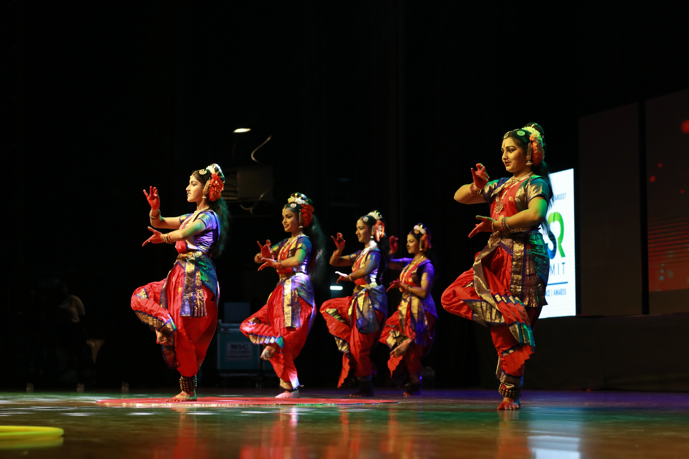

The Human Element
Unscripted portraits, candid wedding glances, and real emotion. Technique exists to serve the story, not overpower it.

Vishal's Shutter Stories · Hyderabad
Candid, natural-light photography for people, weddings, and the wild moments that cannot be staged.
Check Availability ↗Growing up around cameras taught me to watch before I press the shutter. Today, I bring that same patience to portraits, weddings, and wildlife, looking for the glance, gesture, light, or quiet second that makes an image feel honest.
Read the story →Portraiture is the throughline. Weddings extend the same attention to people and emotion. Wildlife is where the patience began.
Unscripted portraits, candid wedding glances, and real emotion. Technique exists to serve the story, not overpower it.
Technical discipline meets intuition: lessons inherited from a photographer father and sharpened through wildlife observation.
Soft natural light, tactile textures, and an unforced visual language over heavy staging or artificial perfection.
“The photographs feel like memories rather than photographs. Nothing feels forced, and somehow every small moment is there.”